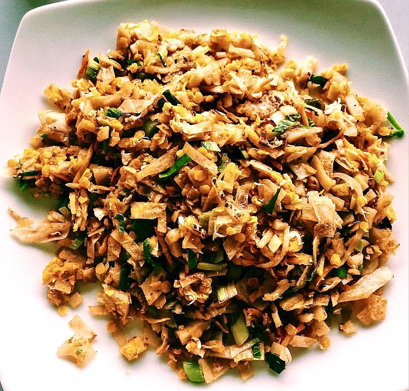

Koththu

Kotthu
Koththu is considered the Sri Lankan equivalent of the hamburger, in terms of its popularity. It began in the 1970s as a part of Tamil culture. Like most famous dishes worldwide, it has very humble beginnings, where a cook's creativity relies on spices rather than ingredients.
Ingredients
Steps
- Cut the chicken to the required size
- Cook the chicken curry
- As the chicken curry cooks, cut and chop the veggies and all other ingredients needed to make the kottu
- Cook the frozen parathas and chop them into small pieces
- Make the egg stir-fry and temper the onions, green chillies etc
- Add the veggies, and mix
- Add the thin paratha strips, and mix
Go back to Home page